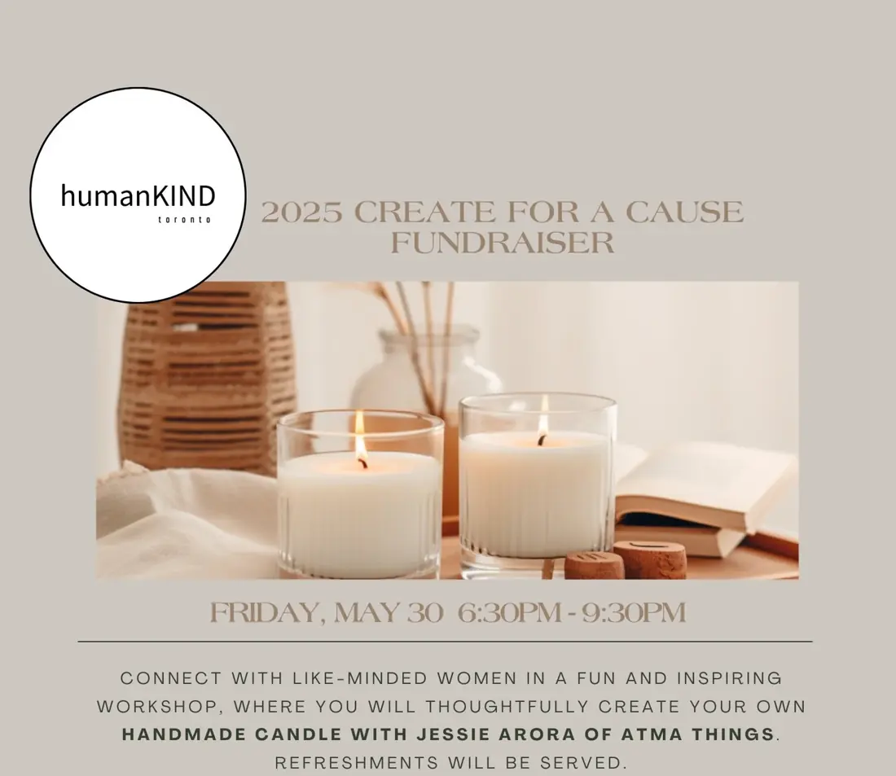

2025
Candle-making with Atma Things
Friday, May 30, 2025 · 6:30 to 9:30 pm · Oak Ridges Community Centre
An evening of compassion, community, and commitment.
More than just candle-making, this workshop blended mindfulness, creativity, and community. Led by Jessie Arora of Atma Things, guests were invited to set their intentions, pour their own soy candle, and customize it with essential oils, herbs, and crystals.
Proceeds from the fundraiser allow us to continue the work we do to provide programs and support to vulnerable women and children residing in local shelters.
